The four animations below are the final videos produced in the course of exploring the notion of "holo botanics." For the best viewing experience, please select the highest available quality in the settings menu at the top right of the video player.
Video essay shown during the conference at Maison des Métallos
Holo Botanics
In the Eyes of an Electronic Bee
Fragments of a Hologram Garden
Videos will automatically play at the highest available quality (4K when available)
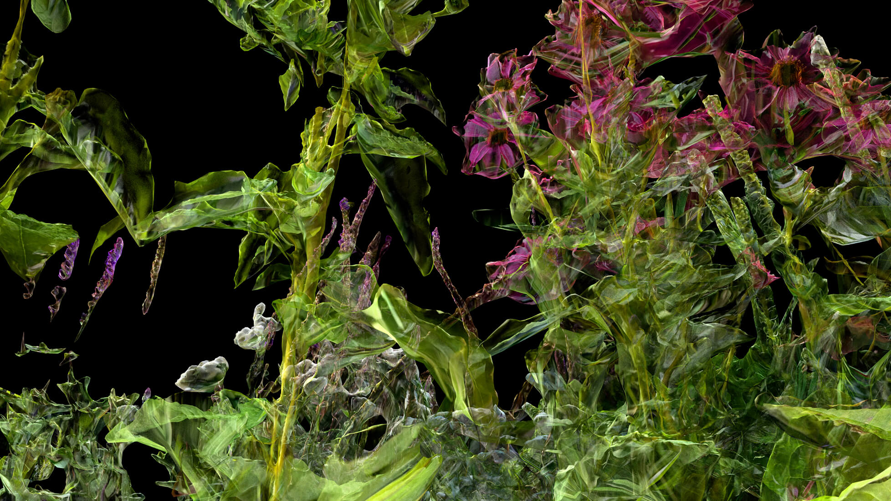
Botanical Holograms
We explored various visual renderings to reveal both the variegated colors of vegetal life and the geometric forms of their new virtual existence. The objective was to design a visual effect that merges the botanical with the virtual. The resulting approach projects floral holograms and constructs the imaginary of a virtual botany.
Cameras were positioned to simulate the perspectives of an ant or a butterfly. Different types of virtual lighting were animated to imagine fantastical nocturnal scenes or to transform a plant into the central figure of a dramatic composition.
Through the Eyes of a Turtle
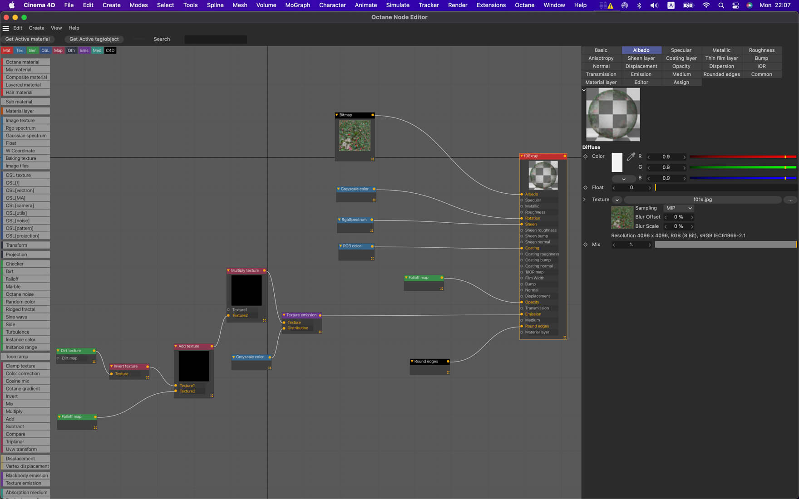
Creation of a holographic material in Cinema 4D and Octane.
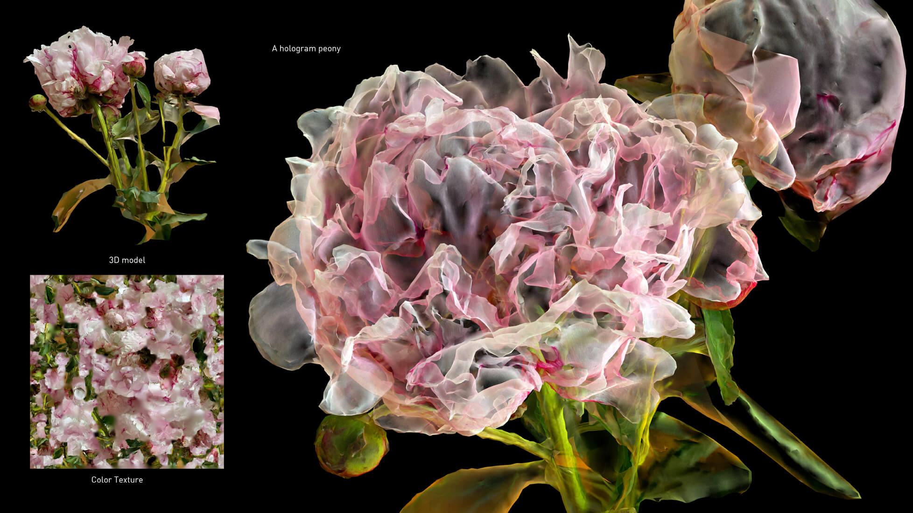
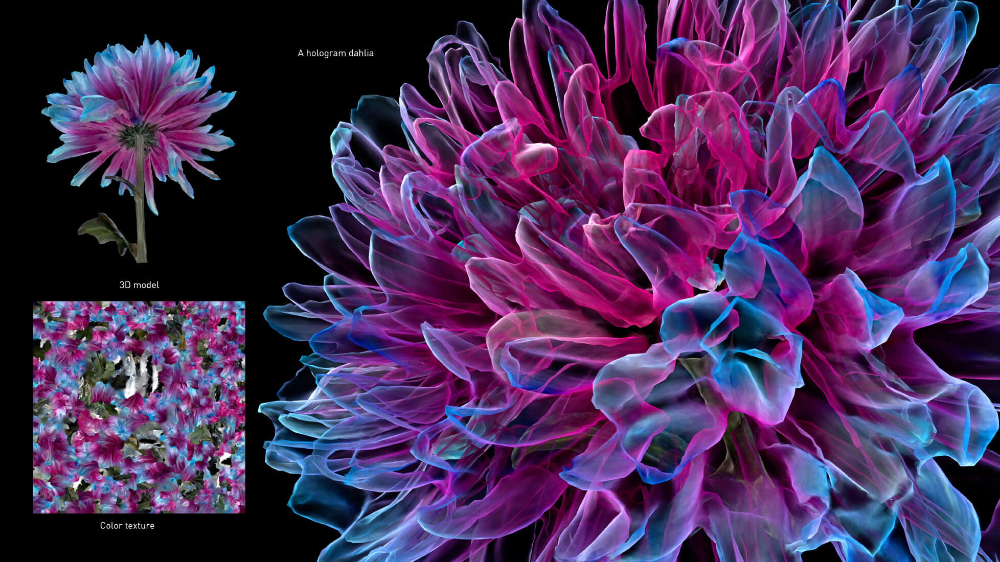
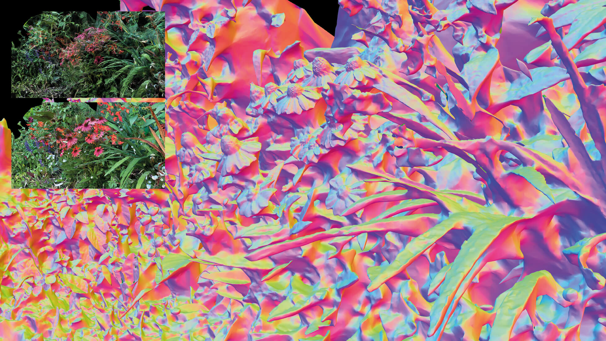
Echinaceas at the Domaine de Chaumont-sur-Loire.
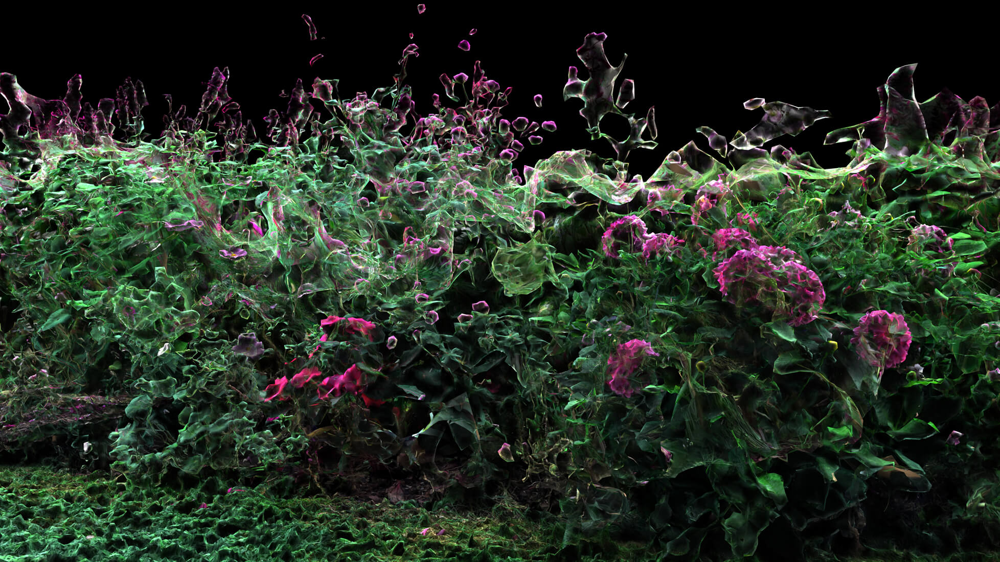
Peonies at the Domaine de Chaumont-sur-Loire.
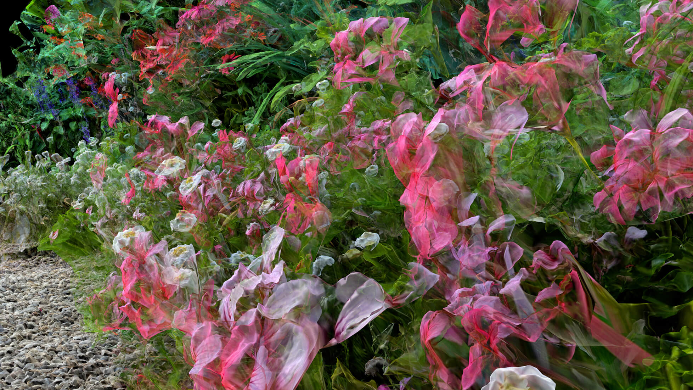
Dahlias, echinaceas, geraniums, chamomiles, and bugles Scan no. f01 Domaine de Chaumont-sur-Loire
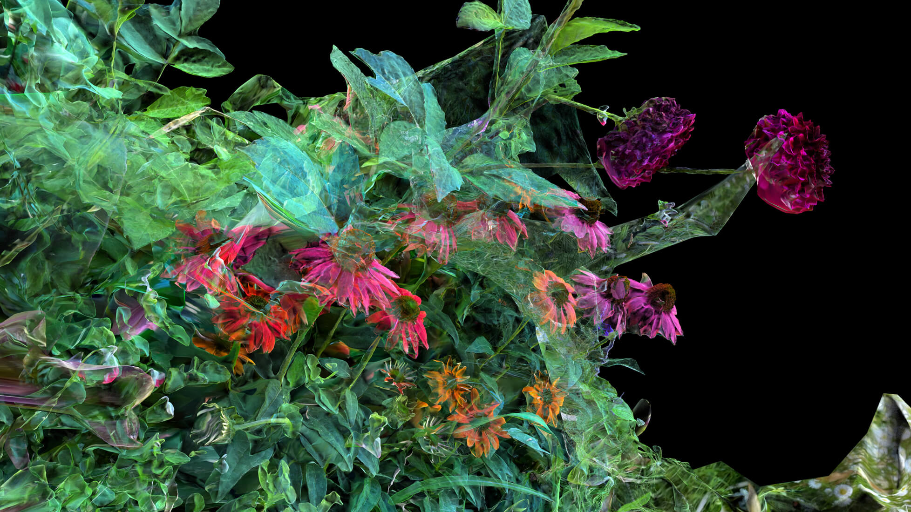
Dahlias and echinaceas, Scan no. f02, Domaine de Chaumont-sur-Loire.
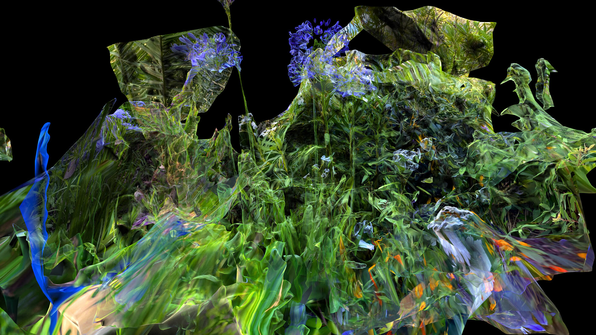
Agapanthus africanus, Scan no. f16, Domaine de Chaumont-sur-Loire.
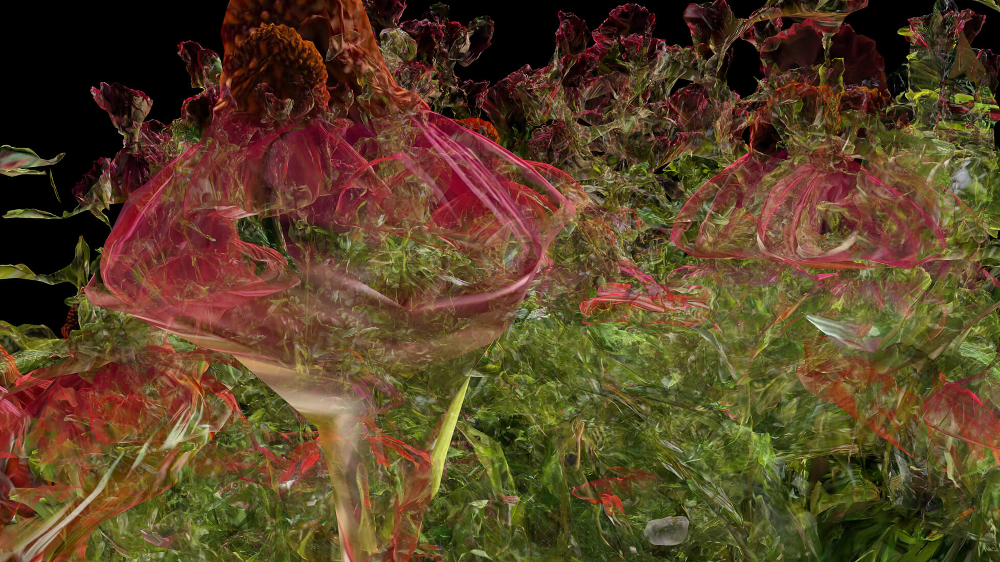
Echinacea sombrero, Scan no. f02, Domaine de Chaumont-sur-Loire.
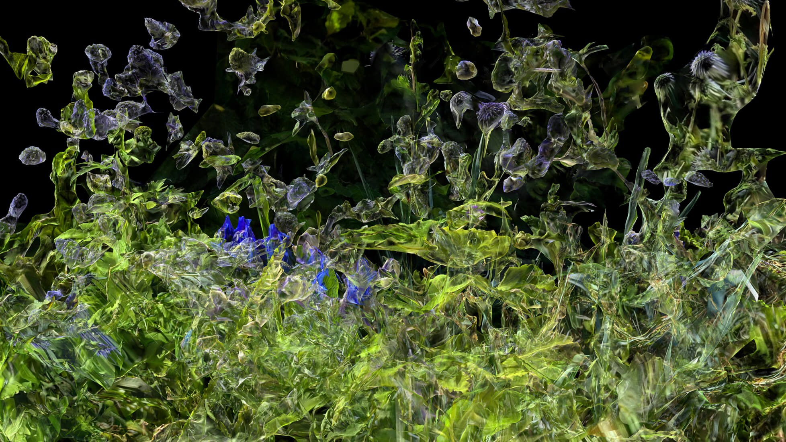
Delphinium, Echinops ruthenicus, Scan no. f18, Domaine de Chaumont-sur-Loire.
We experimented with particle and fluid simulations to explore the possibility of rendering visible the flows of aromas and nectars, volatile and invisible compounds released by plants into the air. At the same time, we sought to reveal the vivid and luminous chromatic spectrum of this multicolored vegetal universe that surrounds us.
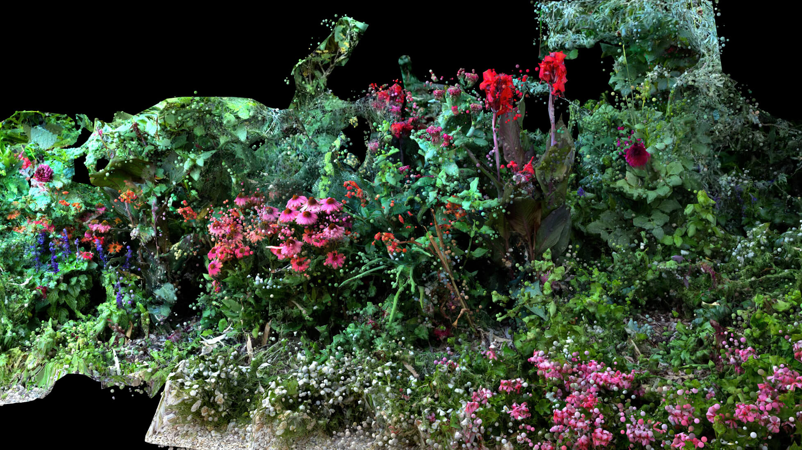
Nectars secreted by dahlia flowers at the Domaine de Chaumont-sur-Loire.
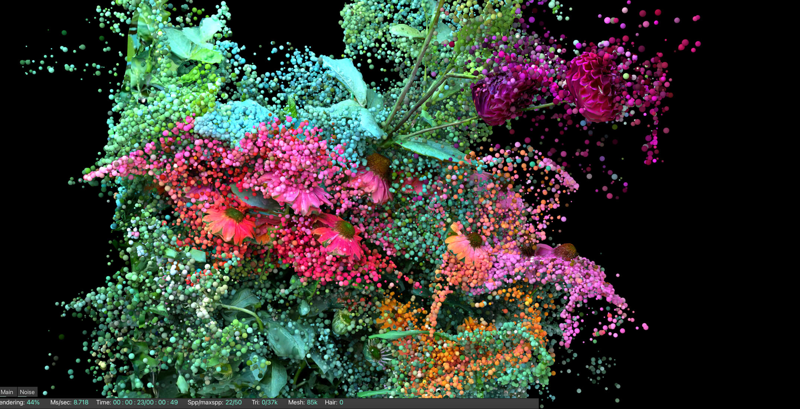
Nectars secreted by echinacea, dahlia, geranium, chamomile, and bugle flowers at the Domaine de Chaumont-sur-Loire.
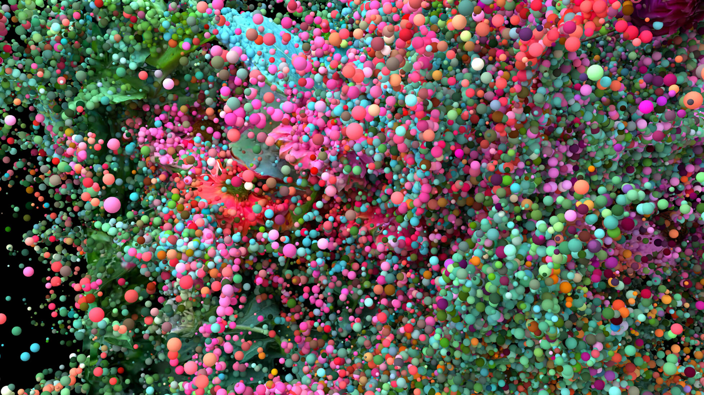
Colors of echinacea at the Domaine de Chaumont-sur-Loire.
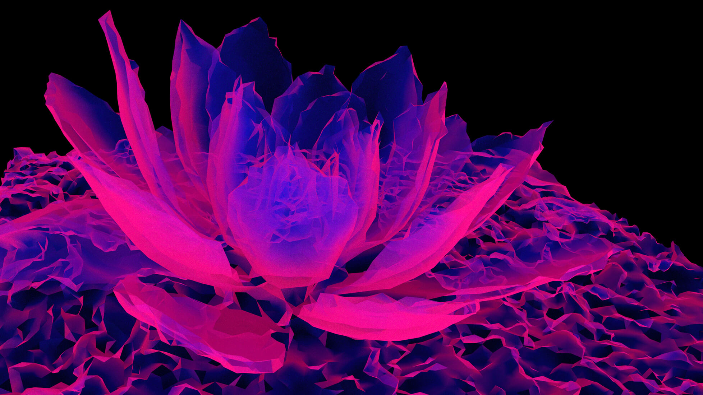
A neon breaker
3D scan of echeveria
Garden Route, South Africa